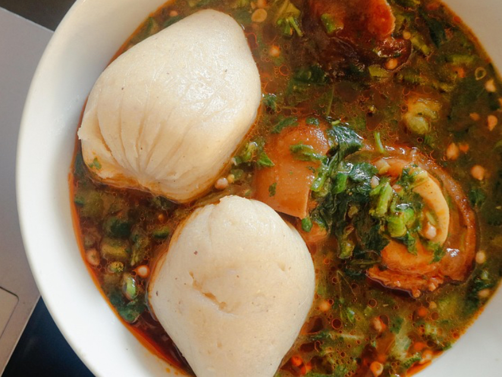

Homepage
Making banku and okro

image sourced from pixabay
Banku and okro
Banku and Okro:Banku (fermented corn and cassava dough cooked into a smooth, starchy ball) is eaten with
okro stew (a rich, slimy soup made from okra, palm oil, fish or meat, and spices).
Ingredients for banku
- Corn dough
- Water
- Salt
- Cassava dough
Ingredients for okro soup
- Fresh okro
- Palm oil
- Onion
- Tomato
- Fresh pepper
- Smoked shrimp powder
- Fish
- Meat or seafood
- Salt and seasoning cubes
Cook the banku
- Combine corn and cassava dough with water and salt.
- Cook while stirring in a large pot until it thickens and becomes smooth.
- Add water as needed, knead until soft, and form into balls.
Making the okro soup
- Heat palm oil; then add onions and fry.
- Add blended tomato and peppers with shrimp powder; cook briefly.
- Add crabs, dried herrings, clams, mackerel, and enough water to simmer.
- Separately, cook fresh okro briefly in water to release slime, then add to the base.
- Add shrimp last (if using); cook gently and serve with banku.